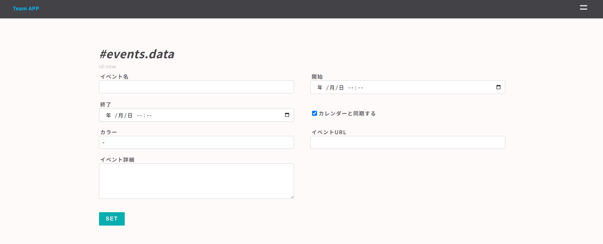

small shell Advanced
アプリ開発
small shellはそれ自体がシェルのため、Linux上で動きうるどんなものも呼びだすことができ、操作することができます。Application Shellの基本構造を理解することで、生成したScratch APPに思いのままにコマンドで処理を記述でき、データを結合、加工することができます。本コースではScratch APPの生成とカスタマイズの流れをご説明します。それでは早速Scratch APPを生成してApplication Shellの構造を読み解いていきましょう。
Scratch APPを使って作成するアプリケーションのシナリオは以下のとおりです。対象地域で配られたチケットでアクセスできる21it.orgの公開アプリを作成します
WEBアプリシナリオ
1. アプリへは対象地域で配られたチケット(QRコードもしくはShared Passコード)でアクセスする
2. 正当なアクセスと判断された場合アプリは公開講義の詳細日時とオンライン参加のためのURLを表示する
3. ユーザーはメニューから問い合わせをすることができる
4. 管理者はTeam APPで問い合わせ管理やスケジュール管理をする
Team APPの生成
small shell BasicにてTeam APPはすでに作成済みかと思いますが、もし生成していない場合は前章を参照のうえ生成してください
スクラッチアプリ生成
早速 Scratch APPを生成してみましょう、ここでもgen dialogでのアプリケーション生成を行います。前提としてsmall shell Basicコースで作成したBase APPが作られている必要がありますのでBasicコースを参照して生成しておいてください。
sudo /usr/local/small-shell/adm/gen -app
対話が始まりますが、ここではアプリケーションの名前は21DOJOとします、pass codeは任意の4桁の数字を入力しています
sudo /usr/local/small-shell/adm/gen -app
Type of APP (1.BASE | 2.FORM | 3.SCRATCH): 3
app_name: 21DOJO
Type of Authentication (1.shared pass | 2.user key | 3.other | 4.none): 1
shared pass code: XXXX
primary databox: events
認証方式
Scratch APPには複数の認証方式がありますが、上記例ではshared passを選択することで共通のコードを知っていればデータにアクセスできるようになります。一方でuser keyとした場合はBase APPと同様にユーザー毎に鍵の生成が可能です。otherやnoneを選択した場合はOauthなどの認証方法を個別に実装する必要があります, 認証の詳細についてはsmall shell公式サイトのAuth tourを参照して下さい
ログイン画面の確認
アプリケーションが生成されたのでアクセスしてみましょう

ポータルの確認
先ほど設定した4桁の数字を入力するとポータル画面が開きます、SEARCHボタンをクリックするとDataBoxとして選択したeventsのtableへアクセスして検索することができます。以下はデフォルトのポータル画面ですが、HTMLやコードを編集してより有用な情報を表示することができます
APP shell基本構造
アプリケーションシェルの構造を理解して、スクラッチアプリを更新していきましょう。スクラッチアプリ作成時に以下のようにコードが生成されたと思いますが、それぞれのコードは更新して機能を作りこんでいくことができます、本コースではあくまで構造の外観を説明するのみですので詳細はsmall shell公式サイトのAPP shellも参考にしてください
SCRATCH APP template is successfully generated
Please update codes
/usr/lib/cgi-bin/auth.21DOJO
/usr/lib/cgi-bin/21DOJO
/usr/lib/cgi-bin/21DOJO_css
/usr/lib/cgi-bin/../bin/21DOJO_del.sh
/usr/lib/cgi-bin/../bin/21DOJO_dl.sh
/usr/lib/cgi-bin/../bin/21DOJO_get.sh
/usr/lib/cgi-bin/../bin/21DOJO_log_viewer.sh
/usr/lib/cgi-bin/../bin/21DOJO_main.sh
/usr/lib/cgi-bin/../bin/21DOJO_page_links.sh
/usr/lib/cgi-bin/../bin/21DOJO_set.sh
/usr/lib/cgi-bin/../bin/21DOJO_table.sh
/usr/lib/cgi-bin/../descriptor/21DOJO_auth_form.html.def
/usr/lib/cgi-bin/../descriptor/21DOJO_get_new.html.def
/usr/lib/cgi-bin/../descriptor/21DOJO_get_new_incf.html.def
/usr/lib/cgi-bin/../descriptor/21DOJO_get_ro.html.def
/usr/lib/cgi-bin/../descriptor/21DOJO_get_rw.html.def
/usr/lib/cgi-bin/../descriptor/21DOJO_get_rw_incf.html.def
/usr/lib/cgi-bin/../descriptor/21DOJO_log_viewer.html.def
/usr/lib/cgi-bin/../descriptor/21DOJO_main.html.def
/usr/lib/cgi-bin/../descriptor/21DOJO_set.html.def
/usr/lib/cgi-bin/../descriptor/21DOJO_table.html.def
ディレクトリ構造
コードは3つのディレクトリに格納されます、以下のとおり1.cgi-bin 2.bin 3.descriptorにコードが格納されますが、処理の順序も同様の並びとなります。クライアントから要求があるとcgi-bin配下のコントローラーが要求を受け付け、bin配下のアクションスクリプトを呼び出し、アクションスクリプトがdescription配下のHTML定義を読み込みながら応答をクライアントに返すという順序で処理がされます
cgi-bin # アプリケーション全体をコントロールするcontrollerプログラムを配置
bin # 応答処理をAction scriptとして記述、DataBoxへの接続や分岐処理をする
descriptor # HTML及びCSSの定義を配置
URL構造
先ほど作成した21DOJOアプリの認証画面へアクセスした際、WSL環境をお使いの場合URLは以下のとおりだったと思います、small shellではウェブアプリケーション毎にauth.$APPというプログラムが生成され、アプリケーション毎の認証を制御します
http://localhost/cgi-bin/auth.21DOJO
認証が成功した場合、コントローラーへ自動で接続されます。ログイン後のURLをブラウザからコピーしてみてみましょう、URLはsession情報やsessionを保証するpinコードを含んでいます。また、req=mainという記述も確認できると思いますが、これはmainページのリクエストを意味します
http://localhost/cgi-bin/21DOJO?session=26a289bf7eedac7dfe4e26aa33a912bd36745e158c3592728446f9e57cf1b117&pin=13913&req=main
QUERY_STRING
QUERY_STRINGとはURLに付加するパラメーターですが、プログラムの後に?を付けてパラメーターを記述することでプログラムに値を渡すことができます。上記req=mainというパラメーターはsmall shelフレームワーク上でreqという変数とmainという値として展開します、また&を付けることで複数のQUERY_STRINGをURLに連結していくことができます。
コントローラー
コントローラーはcgi-bin配下に置かれ、認証後のセッションの維持やrequest毎にbin配下のactionスクリプトへのルーティングを記述しています。21DOJOアプリのコントローラーの中身を見てみましょう。cgi-bin配下には設定したアプリケーション名がそのままプログラムとして生成され、コントローラーとして機能します
Routing
cgi-bin配下の21DOJOをcatで確認するとルーティングがコード自体に埋め込まれていることが確認できます。req変数に入っている内容に応じてcase分で分岐処理を行いますが、small shellフレームワークではこのcase分をルーティングと呼んでいます
tail -34 /usr/lib/cgi-bin/21DOJO
#----------------------------
# routing to action scripts
#----------------------------
case "$req" in
"main")
../bin/21DOJO_main.sh session:$session pin:$pin user_name:$user_name remote_addr:${remote_addr};;
"get")
../bin/21DOJO_get.sh session:$session pin:$pin user_name:$user_name id:$id;;
"set")
../bin/21DOJO_set.sh session:$session pin:$pin user_name:$user_name id:$id;;
"del")
../bin/21DOJO_del.sh databox:$databox session:$session pin:$pin id:$id ;;
"table")
table_command="`echo $table_command | sed "s/ /{%%space}/g"`"
../bin/21DOJO_table.sh session:$session pin:$pin user_name:$user_name id:$id page:$page table_command:$table_command;;
"log_viewer")
../bin/21DOJO_log_viewer.sh session:$session pin:$pin user_name:$user_name id:$id ;;
"file")
../bin/21DOJO_dl.sh session:$session pin:$pin user_name:$user_name id:$id ;;
*)
echo "error: wrong request";;
esac
exit 0
Parse
ルーティングに至る前処理としてはsessionの妥当性の確認やクライアントからのリクエスト内容の解析などを行いますが、クライアントからPOSTされた要求を解析するプログラムとしてparse.shを使用します。controllerに、例えばuser_nameをPOSTした場合、controllerは/var/www/tmp/$session配下にuser_nameというファイルを作り、そこにPOSTされたユーザー名を格納します。$sessionは要求の都度生成されるsession値が入ります。詳細はparseを翻訳して確認してください
アクションスクリプト
コントローラーがルーティングを通じて呼び出すのがアクションスクリプトですが、ユーザーへの応答を返すのはアクションスクリプトになります。主な処理としてはDATA_shellへ接続してデータを抽出したうえで所定のHTML descriptorを読み込みそのまま返します。その際、%%tagについてsedで置き換えるという処理を行っています。例として21DOJO_get.shの中身を見てみましょう、いくつかの%%tagがありますがデータは主に%%datasetの中にsedで埋め込まれます
tail -18 /var/www/bin/21DOJO_get.sh
# render HTML
cat ../descriptor/${view} | sed "s/^ *</</g" \
| sed "/%%common_menu/r ../descriptor/common_parts/21DOJO_common_menu" \
| sed "/%%common_menu/d" \
| sed "/%%dataset/r ../tmp/$session/dataset" \
| sed "s/%%dataset//g"\
| sed "/%%history/r ../tmp/$session/history" \
| sed "s/%%history//g"\
| sed "s/%%id/$id/g" \
| sed "s/%%pdls/session=$session\&pin=$pin\&req=get/g" \
| sed "s/%%session/session=$session\&pin=$pin/g" \
| sed "s/%%params/session=$session\&pin=$pin/g"
if [ "$session" ];then
rm -rf ../tmp/$session
fi
exit 0
HTML descriptor
アクションスクリプトが呼び出しているHTML descriptorも見てみましょう。get用のActoin scriptはget関連のHTMLディスクリプターを呼び出しますが、%%datasetの前後4行を抽出すると以下のようになっています。基本的には純粋なHTMLに所定のtagを埋め込みデータ変換しながらクライアントに要求を返すというのがsmall shellの基本的な処理ロジックになります
cat /var/www/descriptor/21DOJO_get_rw.html.def | grep -2 %%dataset | sed -r "s/^(.*)</</g"
<form method="post" action="./21DOJO?%%params&req=set&id=%%id" onclick="document.charset='utf-8';">
<ul>
%%dataset
</ul>
</button>
アプリのカスタマイズ
大枠の構造を理解いただいたところで、さっそくアプリのカスタマイズを行っていきましょう。
keyの追加
まずは、今回の目的に応じてDataBoxを拡張しましょう、Team APPのデフォルトのevents定義だとイベントの詳細や参加URLを追記できないためkeyを追加します
original event form

sudo /usr/local/small-shell/adm/gen -addcol
databox_name: events
key(col7) name: url
key (col7) label: イベントURL
data type (text | select | radio | checkbox | email | num | tel | date | date-time | url | textarea | file | pdls | mls): url
required to input each time? (yes | no): no
Do you want to add more column to dataset ? (yes | no) : yes
key(col8) name: detail
key (col8) label: イベント詳細
data type (text | select | radio | checkbox | email | num | tel | date | date-time | url | textarea | file | pdls | mls): textarea
required to input each time? (yes | no): no
Do you want to add more column to dataset ? (yes | no) : no
new event form

ポータルのアップデート
続いて21DOJOへのログイン時に最初に表示されるポータルページに最新のイベント情報が出てくるようにしましょう
サンプルHTML
メインページのmain配下を以下のように更新しましょう、各%%tagにはアクションスクリプト側で情報を埋め込みます
sudo nano /var/www/descriptor/21DOJO_main.html.def
--code--
<div class="main">
<div class="description">
<h1>21世紀IT塾公開講義の最新情報をご確認ください</h1>
<h1>記載のURLからご参加いただければと思います</h1>
<a href="./21DOJO?%%session&req=table"><button class="button">SEARCH</button></a>
</div>
<div class="event">
%%event
</div>
</div>
--------
併せてevent classを21DOJO cssに追記してレイアウトを微修正しましょう、classの追記は基本的にはどこでも構いませんが、ここでは一番下に追記しています
nano /var/www/descriptor/21DOJO.css.def
--code--
.event {
padding: 24px 4px;
}
--------
main.sh
21DOJOのmain.shにて%%tagを埋め込みます、始めにDATA_SHELLが使えるようコメントアウトしてください。databoxの最新の1行目のエントリーをhead -1でサーチして、idを取得、データをeventファイルに書き出したのちsedで%%eventを上書しています
sudo nano /var/www/bin/21DOJO_main.sh
--code--
# SET BASE_COMMAND
#META="sudo -u small-shell ${small_shell_path}/bin/meta"
DATA_SHELL="sudo -u small-shell ${small_shell_path}/bin/DATA_shell session:$session pin:$pin app:21DOJO"
id=`$DATA_SHELL databox:events command:head_-1 format:none | awk -F "," '{print $1}'`
$DATA_SHELL databox:events action:get id:$id keys:name,start,end,url,detail format:html_tag > ../tmp/$session/event
# -----------------
# render HTML
# -----------------
cat ../descriptor/21DOJO_main.html.def | sed "s/^ *</</g" \
| sed "/%%common_menu/r ../descriptor/common_parts/21DOJO_common_menu" \
| sed "s/%%common_menu//g"\
| sed "/%%event/r ../tmp/$session/event" \
| sed "s/%%event//g" \
| sed "s/%%user_name/$user_name/g" \
| sed "s/%%session/session=$session\&pin=$pin/g" \
| sed "s/%%params/session=$session\&pin=$pin/g"
--------

メニューの更新
続いてアプリケーションの右上 even(=)メニューの内容も変更してみましょう。ここではTeam APP付属のInquiryのURLと、21世紀IT塾の公式サイトおよびオンラインドキュメントサイトのURLを追記します。併せてメニューの文言も少し整理します
sudo nano /var/www/descriptor/common_parts/21DOJO_common_menu
--code--
<li><a href="./21DOJO?%%session&req=main">最新イベント</a></li>
<li><a href="./21DOJO?%%session&req=table">イベント検索</a></li>
<li><a href="./inquiry">お問い合わせ</a></li>
<li><a href="https://21it.org">21世紀IT塾HOME</a></li>
<li><a href="https://doc.21it.org">オンラインドキュメント</a></li>
--------
Read onlyへの変更
21DOJOはshared passのためシステムユーザーしかもちませんが、このユーザーをread onlyに変更することでアプリ全体が読み取り権限のみとなり書き込みができなくなります
sudo /usr/local/small-shell/adm/ops set.attr:21DOJO.app{ro} app:21DOJO
閲覧keyの制限
管理目的以外で使用しないkeyは21DOJOアプリからは閲覧できないようkeys=allをコメントアウトして閲覧可能なkeyを制限しましょう
sudo nano /var/www/bin/21DOJO_table.sh
--code--
#keys=all
keys=name,start,end,detail,url
--------
sudo nano /var/www/bin/21DOJO_get.sh
--code--
#keys=all
keys=name,start,end,detail,url
--------
チケットURL整備
より簡易的なアクセスができるよう、URL自体にpass codeを埋め込みそのURLをQR codeにしましょう。URLにQUERY_STRINGを付加すれば認証画面なしで自動ログインが可能です
URLデザイン
以下はWSL環境でpass codeとして1234を設定したアプリにQUERY_STRINGだけでログインするためのURLの例です
http://localhost/auth.21DOJO?app_pass=1234
問い合わせフォーム更新
Team APP付属のInquiries DataBox及びInquiryフォームを利用ケースにあわせて更新しましょう
データ定義の更新
DataBoxのラベルやselect可能なパラメーターは直接更新することができます。DataBoxの定義が格納されたdef配下で定義を１つずつ更新していきましょう
Info
nameやtypeの変更はデータを破壊することがあるため変更しないでください。label, params, optionのみ変更可能になっています
sudo nano /usr/local/small-shell/databox/inquiries/def/col2
--code--
name="user_name"
label="お名前"
type="text"
option="required"
--------
sudo nano /usr/local/small-shell/databox/inquiries/def/col3
--code--
name="email"
label="メールアドレス(任意)"
type="email"
option=""
--------
sudo nano /usr/local/small-shell/databox/inquiries/def/col4
--code--
name="type"
label="Inquiry Type"
type="select"
params="公開講義について オンラインドキュメントについて small-shellについて その他"
option="required"
--------
sudo nano /usr/local/small-shell/databox/inquiries/def/col5
--code--
name="inquiry"
label="お問い合わせ内容"
type="textarea"
option=""
--------
フォームHTML
お問い合わせHTMLフォームも変更が可能です、必要に応じてdescriptorを直接更新してください。
sudo nano /var/www/descriptor/inquiry_get_new.html.def
--code--
<html>
<head>
<meta charset="UTF-8" />
<title>inquiry.new</title>
<meta name="viewport" content="width=device-width,initial-scale=1.0,minimum-scale=1.0,maximum-scale=1.0,user-scalable=no">
<link rel="stylesheet" href="./inquiry_css">
</head>
<body>
<div class="container">
<div class="form-box">
<div class="description">
<h1>#inquiry</h1>
<p>21世紀IT塾お問い合わせフォーム</p>
<hr>
</div>
<form method="post" action="./inquiry?req=set&id=%%id">
<ul>
%%dataset
</ul>
<button class="button" type="submit">SUBMIT</button>
</form>
</div>
</div>
</body>
</html>
--------
問い合わせフォーム
問い合わせはTeam APP上でチケットして管理され、チャット形式でやりとりを継続できます
実環境での使用について
静的サイトとしての公開
アプリのポータル(main)ページを動的なコンテンツではなく静的なHTMLページとしてexportすることができます。Windows WSLなどで作成し、exportしたコンテンツをレンタルサーバやgithubなどにUploadして公開ページとすることができます。その際、問い合わせやテーブルの検索などの動的コンテンツまで含んだアプリとしては公開できないため用途を限定した使い方だと思っていただければと思います。静的なコンテンツのデザイン方法やexport方法は公式サイトのrecipeをご確認ください。
動的サイトとしての公開
実環境でsmll shellで作成したWEBアプリをそのまま公開する場合、AWSやVPSなどクラウド上の仮想サーバを使ってsmall shellアプリを本コースで構築したとおりに構築して公開することをお勧めします。その際、公開サーバは必ず外部からの攻撃を受けますので、接続IPのフィルターをかけて下さい。small shellのIP whitelistもそうですがFirewallでのIPアドレス制限が最も効果的です。特定のIPアドレスを使って公開サーバにアクセスするためにVPNサービスを使って固定IPを取得する方法などがあります。詳細は公開講座の場にて説明させていただければと思います
さらなる学習のために
small shell公式サイトにはより詳細で高度なドキュメントが公開されていますので是非読み解いて下さい。また、21世紀IT塾公開講座へ参加いただければさらに実用的なスキルもつけていただけます。次章では21世紀のデジタル化社会を生きる上で必要不可欠な耐性として考慮されるDigital耐性についてご説明します